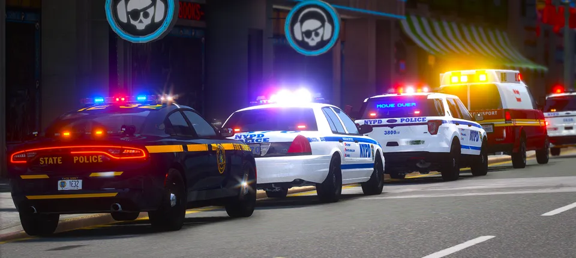

BEFORE YOU
GO ON DUTY.
Your questions, answered.
Get to know the server before your first shift.
01What is FivePD?
An emergency-service simulator: work as a police officer, firefighter, or paramedic, answering AI callouts and interacting with NPCs.
02Is this a New York map?
Yes. NYRP uses an optimized GTA IV map, including interiors in precincts, firehouses, hospitals, JFK Airport, shops, and some houses.
03Which departments can I join?
Start with NYPD, NYSP, FDNY, or PAPD—no application. Activity and XP unlock MTAPD, NYCSO, PEP, NYCD, DSNY, and Mount Sinai.
04How do ranks work?
Begin as a police officer or detective grade 3; in fire, a firefighter or driving engineer. Activity, roleplay ability, and department knowledge support progression, up to Captain (CPT).
05Are divisions restricted?
All divisions within each department are open to play.
06Can I apply to the staff team?
Staff are selected directly by the founders, rather than through applications.
07Is civilian roleplay available?
No. NYRP does not offer CIVRP.

THE CITY IS CALLING.
GO ON DUTY.
Have FiveM installed? The server link opens it directly.